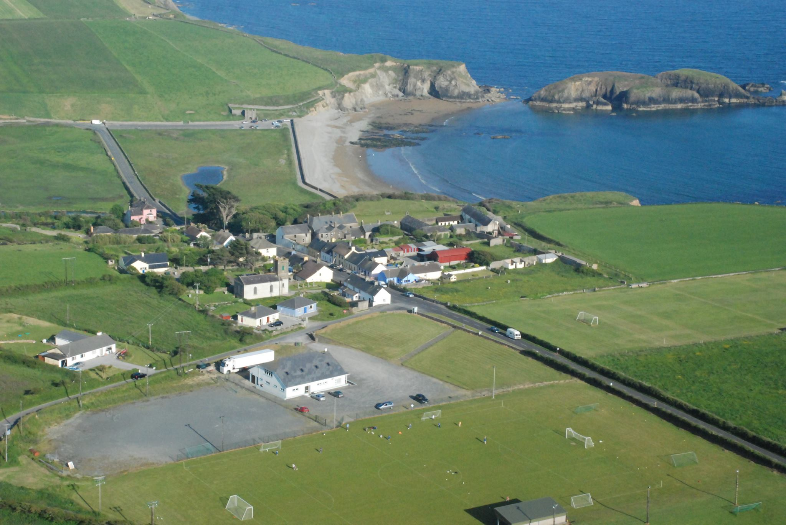
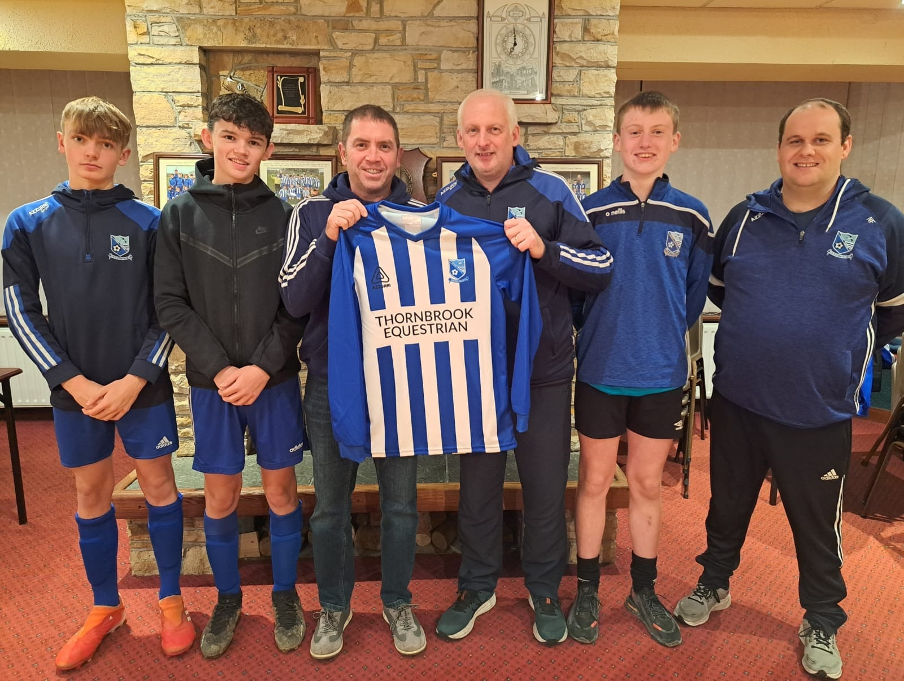

Location
Seaview Celtic is located on the top of a hill in the lovely seaside village, Annestown. The Club was founded in 1972.

Services
The club has two full-sized football pitches and an astro-turf pitch. There are football teams set up for all age groups and a youth club is hosted in the clubhouse once a week.
Information
If you wish to find out more please contact the number 0876666666 or refer to our Facebook page. You can apply to sign up for a team directly by clicking on the 'Sign Up' option at the top the page. You may also contact one of the club liaisons via Whatsapp using the icon on this page.